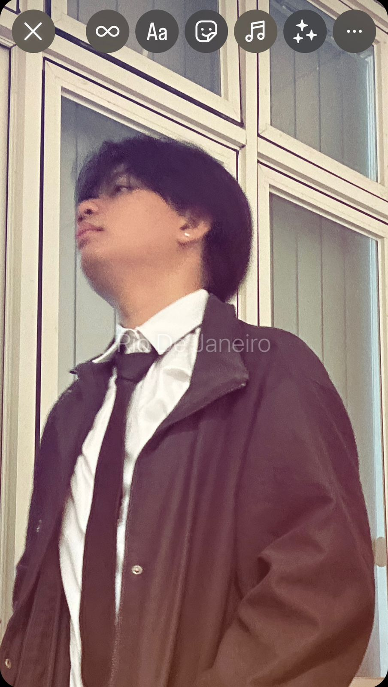

UI/UX
Designer
Merancang antarmuka yang intuitif dan pengalaman pengguna yang memukau dengan sentuhan estetika modern.
<Coder>
Frontend
Menerjemahkan desain visual ke dalam baris kode yang bersih, responsif, dan berefisiensi tinggi.
